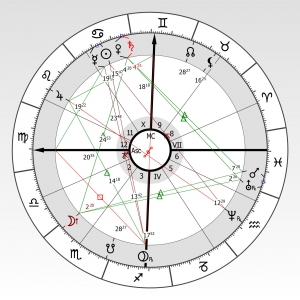

Legtöbben a napi horoszkópról ismerjük az asztrológiát, azonban ez sokkal több a látszatnál.
Onnan tudhatjuk, hogy valaki ponos elemzést csinál, hogy megkérdezi a pontos óra percét és
helyét a
születésünknek, enélkül nem lehet pontos
következtetéseket levonni.
4 főbb egységre bonthatjuk magát a horoszkópot, legonkább egy több rétegű tortához
lehetne hasonlítani.
-
Zodiákus:
Állatövi jegyek Kostól indulva a halakig A jegyek a dolgok minőségt jelzik, például az egó
minőségét
nevezzük személyiségnek.
Hasonlóképpen az akaratunknak (mars), gondolkodásunknak(merkúr) és a többi
bolygónak is van saját minősége,
milyensége.
-
Házak:
Egy-egy házat egy-egy életterületnek tekinthetünk ezek pontosítják, hogy egyes tulajdonságainkat
milyen
életterületen éljük.
Pl 8-as ház mutatja milyen a szexualitásod, 4-es milyen a családod stb sok dolog az életben. 12
ház van a
jegyekhez hasonlóan, azonban
az elhelyezkedésük teljesen független tűlük és nem is egyenletes.
-
Bolygók:
Amíg a jegyek a hogyan, a házak a hol kérdésre válaszoltak, addig a bolygók a mit kérdésre. Ők
az
összeköttető csomópontok, ők mutatják
mi történik az életedben, viszont jegyek, házak nélkül nem tudnán mit leolvasni
-
Fényszögek:
Bonyolodik a helyzet, ugyanis ez meghatványozza a felső három hatványhalmazát. A fényszögek a
bolygók közti
kapcsolatot jelentik.
Pl ha a hold az anyukát jelképezi a nap pedig az apukát és ezek szemnen állnak egymással. Akkor
a való
életben is egymás ellentétei
Ezeknek a kombonációszáma olyan nagy, hogy lehetetlenné teszi ,hogy két ugyanolyan ember jöjjön a
világra.
Nem beszélve arról, hogy mindenki más következtetéseket von le, más családba születik, más
döntéseket hoz.
